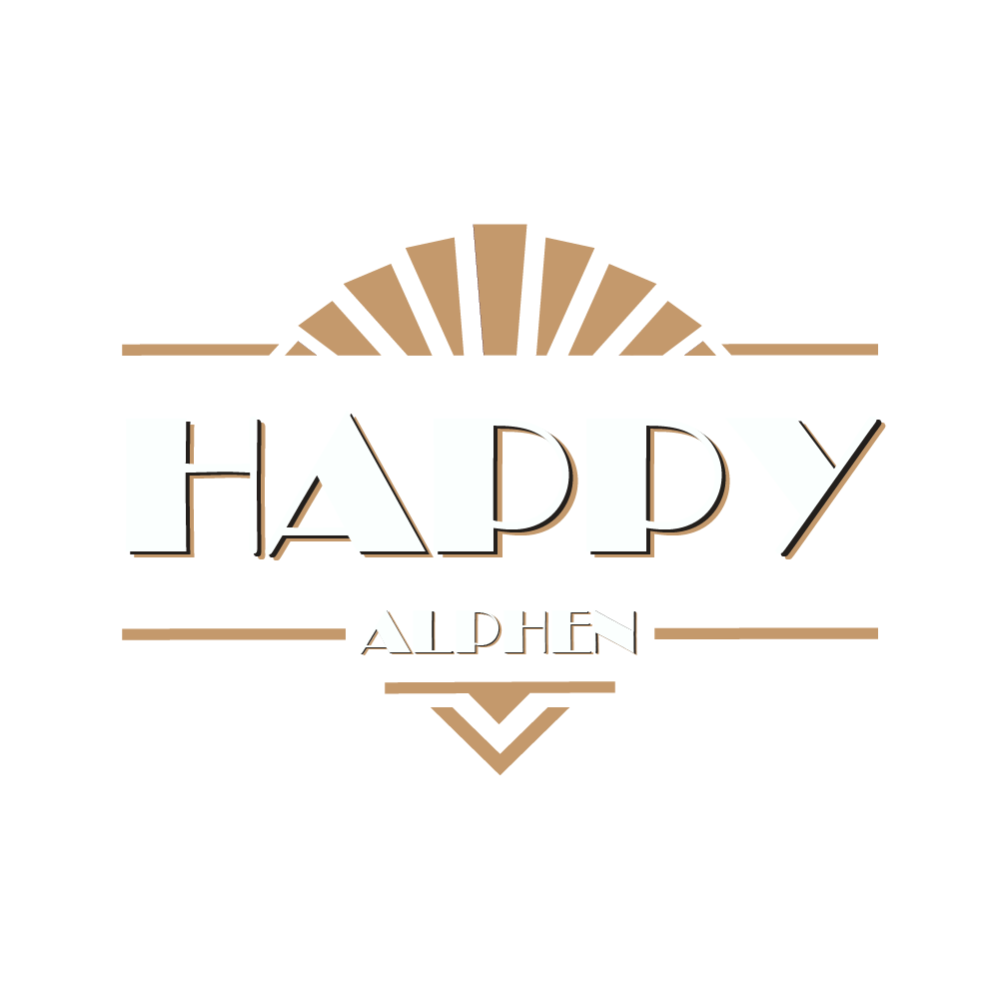
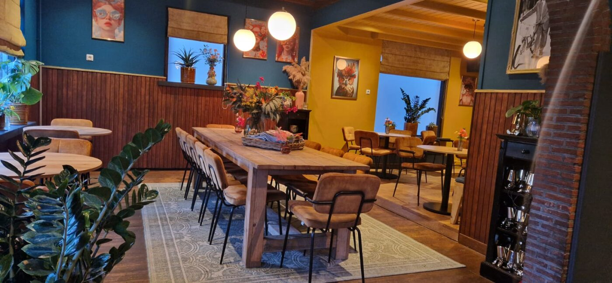
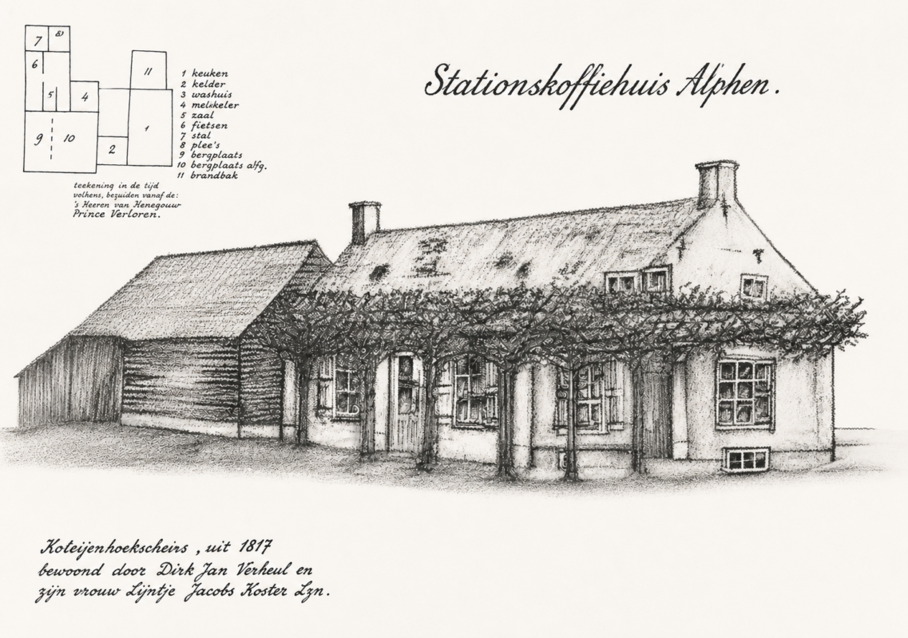
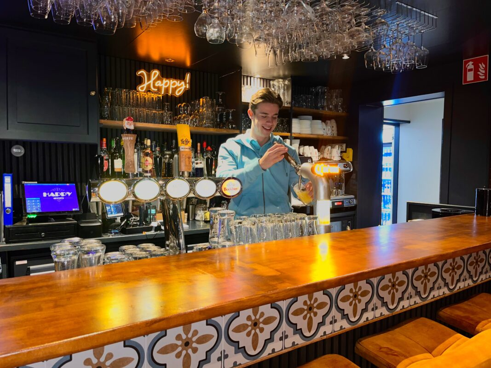

Eten
Of je nu een snelle hap zoekt of uitgebreid wilt dineren, bij ons ben je altijd welkom. Het draait om gezelligheid, goed eten en fijne momenten.
Naar de menukaart
Reserveren: 013-5081482Eetcafé met twee zalen aan de Stationstraat in Alphen. Voor een snelle hap, een uitgebreid diner, een borrel op het terras of je eigen feest.

Of je nu een snelle hap zoekt of uitgebreid wilt dineren, bij ons ben je altijd welkom. Het draait om gezelligheid, goed eten en fijne momenten.
Naar de menukaartBinnen in ons knusse interieur of buiten op ons zonnige terras: je voelt je meteen thuis. Onze medewerkers helpen je graag kiezen uit de dranken en borrelhapjes.
OpeningstijdenEen verjaardag, bruiloft, bedrijfsfeest of uitvaart? Onze zalen zijn volledig uitgerust. Samen bespreken we je wensen, zodat jij alleen maar hoeft te genieten.
Over de zalenOriginele kaarten: lunchkaart (PDF) en dinerkaart (PDF). Prijzen in euro's.
Naast het eetcafé heeft Happy twee sfeervolle zalen: een grote zaal van ruim 200 m² en een kleinere zaal met eigen ingang en toiletten. Zo is er ruimte voor grote feesten en voor kleinere, persoonlijke bijeenkomsten.
Ruim 200 m²grote zaal met eigen bar
Eigen ingangkleinere zaal met eigen bar en toiletten

Happy is flexibel in te richten om te feesten met kleine en grote groepen. Of je nu een intieme borrel wilt organiseren of een groot feest met muziek en dansen: we hebben de ruimtes en de mogelijkheden om jouw feest precies aan te passen aan jouw wensen.
Onze missie: jou een onvergetelijke ervaring bieden.
Feest aanvragenEen gezellige en professionele setting voor vergaderingen, workshops en zakelijke presentaties, formeel of informeel, voor kleine en grotere groepen. De ruimte staat helemaal klaar, inclusief een scherm en flip-over.
Happy is gemakkelijk bereikbaar en heeft voldoende parkeergelegenheid. Ons personeel helpt je met alles wat je nodig hebt, zodat jij je kunt richten op de inhoud. Vraag gerust naar de mogelijkheden en arrangementen.
Vergaderen met de gezelligheid van een café en de efficiëntie van een kantoor: dat kan bij Happy.
Vergadering aanvragenEen afscheid vraagt om een warme, persoonlijke omgeving. Bij ons kun je samenkomen en afscheid nemen van een geliefde, familielid of vriend, in een sfeervolle en gemoedelijke setting. Er is ruimte voor intieme bijeenkomsten en grotere groepen, en de inrichting passen we aan je wensen aan.
Onze keuken maakt het afscheid compleet: van een koffietafel met luxe gebak en broodjes tot uitgebreide borrelplanken en drankjes. De arrangementen stellen we op maat samen. Ons team zorgt dat alles soepel verloopt, met alle ondersteuning en discretie die nodig is.
Betrokken service, met aandacht voor details.
Bespreek de mogelijkhedenBij Happy word je blij, en daar worden wij ook happy van. Je kunt je eigen feest bij ons organiseren, maar we organiseren ook zelf regelmatig feesten, dansavonden en muziekquizzen. Altijd iets te doen.
28nov
28 en 29 november en 5 december, start wanneer je wilt tussen 10.00 en 15.30 uur
Help jij de Pieten om de geheime code te kraken? Ga op avontuur, zoek de aanwijzingen en los de puzzel op! € 7,50 per kind, inclusief ranja, pepernoten en een leuk cadeautje.
28nov
Zaterdag 20:30 - 23:30
Wij halen Mallorca naar Happy! Geïnspireerd op Mega Park gaan we voor een avond vol gezelligheid en natuurlijk de nodige biertorens. En die bekende Mega Park-shirts? Daar hebben wij onze eigen Happy-twist aan gegeven.
26dec
2e kerstdag 11:00 - 22:00
Gezellig samen tafelen, lekker eten en overal twinkelende lichtjes. De "normale" verlichting blijft uit, de kerstverlichting en kaarsen gaan aan. Met een feestelijke kerstbrunch van 11:00 tot 14:00 uur.
31dec
Donderdag 20:30 - 23:30
We sluiten het jaar feestelijk af met muziek, hapjes, drankjes en vooral heel veel gezelligheid. Samen tellen we af naar 12 uur en proosten we op het nieuwe jaar.
20mrt
Zaterdag 20 maart 2027, 20:30 - 23:30
Een avond vol spelletjes en gezelligheid, met verschillende drankspelletjes en natuurlijk een Split the G-contest. Meedoen mag, gezellig erbij zijn ook. See you there, lads!
10apr
Zaterdag 10 april 2027, 20:30 - 23:30
Onze inmiddels bekende kabouteravond is terug voor de 3e editie! Een avond vol La Chouffe, gezelligheid en natuurlijk kabouters.
17apr
Zaterdag 17 april 2027, 19:00 - 23:00, € 39,50
3jul
Zaterdag 3 juli 2027, 20:30 - 23:30
Ter ere van de Tour de France en onze eigen Frans rijden we onze eigen koers, met etappes en leuke spelletjes. Wie pakt de koppositie en wie verovert de felbegeerde truien?

Waar nu ons parkeerterrein ligt, stond vroeger het station van Alphen aan het Bels Lijntje: de spoorlijn tussen Tilburg en Turnhout.

Onze missie is om onze gast een onvergetelijke ervaring te geven, door betaalbare gerechten te serveren met een lach. Dat kunnen we alleen met een team dat zich zelf ook Happy voelt.
Interesse? Bel 013-5081482, mail info@happy-alphen.nl of loop even binnen. We maken graag kennis!
We zoeken enthousiaste collega's voor de vakantieperiode, en mogelijk ook langer. Ervaring of juist willen leren: motivatie en een positieve instelling vinden we het belangrijkst.
Stationstraat 57
5131 BM Alphen (NB)
| Maandag | 11:00 - 22:00 |
|---|---|
| Dinsdag | gesloten |
| Woensdag | gesloten |
| Donderdag | 11:00 - 22:00 |
| Vrijdag | 11:00 - 01:00 |
| Zaterdag | 10:00 - 01:00 |
| Zondag | 10:00 - 22:00 |
Keuken open van 12.00 tot 20.00 uur, daarna borrelhapjes.